도시계획기사 (2021-05-15 기출문제)
1과목: 도시계획론
1. 영국의 도시계획가인 게데스(P. Geddes)가 구분한 도시활동의 3요소가 아닌 것은?
- 생활
- 생산
- 교통
- 위락
(정답률: 74%)

2. 도시개발사업의 시행 방식에서 수용 및 사용방식의 장점으로 틀린 것은?
- 기반시설확보 용이
- 토지소유자의 재정착 가능
- 사업의 공공성 확보 및 일괄 시행
- 공사기간의 단축 및 대규모 개발 가능
(정답률: 77%)
3. 행정구역 단위인 꼬뮌을 대상으로 수립하는 것으로, 도시기본계획의 내용을 구체화한 중·단기 토지이용계획인 토지점용계획(POS) 제도를 시행하는 국가는?
- 영국
- 독일
- 프랑스
- 일본
(정답률: 68%)
4. 다음 설명에 해당하는 도시경제 분석방법은?
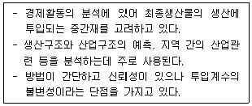
- 입지상모형
- 지수곡선모형
- 투입산출모형
- 변이-할당분석모형
(정답률: 80%)
5. 계획이론을 실체적 이론(Substantive Theories)과 절차적 이론(Procedural Tneories)으로 구분할 때 실체적 이론에 대한 설명으로 틀린 것은?
- 특정 계획 분야의 전문 지식에 관한 이론들이다.
- 계획 현상이나 계획 대상에 관한 이론이라 할 수 있다.
- 경제 또는 사회의 구조나 현상 등을 설명하고 예측하여 문제의 해결 대안을 제시하는 이론이다.
- 계획이 추구하는 목표와 가치에 따라 계획안을 만들어 내는 과정에 관한 공통적으로 일반적인 이론이다.
(정답률: 65%)
6. 완충녹지의 설치 목적 및 기준으로 가장 거리가 먼 것은?
- 전용주거지역, 교육 및 연구시설의 조용한 환경조성
- 재해 발생 시 피난지대로서의 기능
- 도시지역 내 훼손된 자연환경의 개선 복원
- 도로, 철도 등 교통시설에서 발생하는 공해 차단 및 완화
(정답률: 69%)
7. 우리나라 제1기 신도시와 비교하여 제2기 신도시(판교, 화성, 김포, 송파 등) 계획의 특징으로 옳은 것은?
- 고밀도 유지
- 자가용교통 전제
- 프로젝트 파이낸싱 활용
- 주택도시로서의 완결성만 추구
(정답률: 75%)
8. 어느 도시의 최근 10년 간 인구가 60만명에서 90만명으로 증가하였을 때, 연평균 증가율은? (단, 등차급수법에 따른다.)
- 2.5%
- 5.0%
- 6.5%
- 7.0%
(정답률: 64%)
9. 메소포타미아지방에 B.C. 3200년경 수메르인이 세운 고대도시국가가 아닌 것은?
- 우르(Ur)
- 우르크(Urk)
- 라가시(Lagash)
- 모헨조다로(Mohenjo-Daro)
(정답률: 68%)
10. 아래 그림이 나타내는 이론과 3(빗금친 부분)에 해당하는 토지이용이 올바르게 연결된 것은?
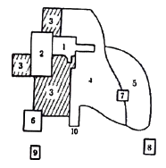
- 선형이론 - 점이지대
- 선형이론 - 도매경공업지구
- 다핵심이론 – 고소득층 주거지구
- 다핵심이론 – 저소득층 주거지구
(정답률: 82%)
11. 지속가능한 도시가 추구하는 목표로 가장 거리가 먼 것은?
- 쾌적한 도시공간의 정비·확보
- 환경 친화적 교통·물류체계정비
- 환경부하의 저감, 자연과의 공생
- 현재 건축물 형태의 계속적 보존
(정답률: 85%)
12. 농촌과 상대되는 개념으로서 도시가 갖는 일반적인 특징으로 틀린 것은?
- 규모가 인구밀도가 높다.
- 공동체 의식이 강하다.
- 익명성과 이질성이 강하다.
- 인구의 유동성이 강하다.
(정답률: 84%)
13. 시가지의 토지이용에 있어 지나친 기능분리나 사적 공간의 확보를 지양하고 적절한 기능의 혼재와 이동거리 단축에 의한 토지자원의 절약, 자동차에 의한 환경의 파괴를 막아보자는 노력으로 등장한 개념은?
- 뉴어바니즘(New Urbanism)
- 도시재생(Urban Regeneration)
- 친환경 생태도시(Eco City)
- 창조도시(Creative City)
(정답률: 72%)
14. 하워드가 주장한 전원도시에 대한 설명으로 틀린 것은?
- 도시의 계획 인구를 제한하였다.
- 철도와 도로로 연결되는 위성도시가 발달하게 되었다.
- 도시 발달에 따른 개발 이익은 공유화하되 토지는 사유화를 원칙으로 하였다.
- 도시 주위에 넓은 농업 지대를 영구히 보전하여 도시와 농촌의 장점을 결합하였다.
(정답률: 74%)
15. 우리나라 토지이용계획의 실현 수단을 직접적 수단과 간접적 수단을 구분할 때, 다음 중 직접적 수단에 해당하는 것은?
- 도시개발사업
- 지구단위계획
- 지역·지구·구역의 지정
- 도시계획시설의 정비
(정답률: 70%)
16. 도시 및 주거환경정비법에 따른 사업의 추진 절차 중 정비사업의 복잡한 권리관계를 정리하기 위해 사업시행 전·후의 권리변환에 대한 내용을 담고 있는 것은?
- 환지처분계획
- 관리처분계획
- 사업시행계획
- 조성토지공급계획
(정답률: 69%)
17. 아래의 설명에 해당하는 계획이론은?
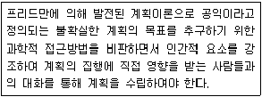
- 종합적 계획(Synoptic Planning)
- 옹호적 계획(Advocacy Planning)
- 점진적 계획(Incremental Planning)
- 교류적 계획(Transactive Planning)
(정답률: 79%)
18. 계획인구를 산정하는 지수성장모형에 관한 설명으로 옳은 것은?
- 안정적인 인구 변화 추세를 나타내는 도시에 적용하는 경우에도 인구의 과도 예측을 초래할 위험이 없다.
- 이자 계산 시 단리율 적용방식을 인구예측에 원용한 것이다.
- 단기간에 급격한 인구증가를 나타내는 경우에 유용하다.
- 대상 도시의 미래 인구는 그 도시가 속한 더 큰 공간적 범위의 인구의 일정 비율이 될 것이라고 가정한다.
(정답률: 65%)
19. 4단계 교통수요추정법에 대한 설명으로 틀린 것은?
- 통행발생, 통행배분, 교통수단선택, 노선배정의 분석 단계를 통해 장래 통행량을 예측한다.
- 현재 교통여건을 지배하고 있는 교통체계의 메커니즘이 장래에도 크게 변하지 않는다고 가정한다.
- 4단계를 거치는 동안 계획가나 분석가의 주관이 개입될 여지가 없어, 객관적인 분석결과를 얻을 수 있다.
- 총체적 자료에 의존하게 때문에 통행자의 총체적·평균적 특성만 산출될 뿐, 행태적 측면은 거의 무시한다.
(정답률: 76%)
20. 토지이용계획의 역할로 가장 거리가 먼 것은?
- 도시의 외연적 확산을 촉진시킨다.
- 토지이용의 규제와 실행수단을 제시해 준다.
- 계획적인 개발을 유도하여 난개발을 억제시킨다.
- 도시의 현재 및 장래의 공간구성과 토지이용 형태를 결정한다.
(정답률: 87%)
2과목: 도시설계 및 단지계획
21. 지구단위계획에서의 대지 내 공지에 대한 설명으로 옳은 것은?
- 공개공지란 건축법에 의한 공지로, 일반이 사용할 수 있도록 설치하는 소규모 휴식시설 등의 공개공지 또는 공개 공간을 뜻한다.
- 공개공지를 필로티 구조로 할 경우에는 유효높이가 10m 이상이 되도록 한다.
- 쌈지형 공지란 일반 대중에게 특정 시기에 개방하고, 교목, 벤치 등을 일체 설치할 수 없는 공지를 말한다.
- 침상형 공지란 지하공공보행통로와 연결되는 지하 부분의 대지 내 공지를 말한다.
(정답률: 70%)
22. 공동주택의 배치 시 도로 및 주차장의 경계선으로부터 공동주택의 외벽까지의 거리는 최소 얼마 이상을 띄워야 하는가? (단, 주택건설기준 등에 관한 규정에 따르며, 기타의 경우는 고려하지 않는다.)
- 1m
- 2m
- 3m
- 5m
(정답률: 73%)
23. 생활권의 위계를 구성단위의 크기가 큰 것부터 순서대로 올바르게 나열한 것은?
- 근린주구 ＞ 근린분구 ＞ 인보구
- 근린분구 ＞ 근린주구 ＞ 인보구
- 인보구 ＞ 근린주구 ＞ 근린분구
- 근린주구 ＞ 인보구 ＞ 근린분구
(정답률: 83%)
24. 도시·군계획시설의 결정·구조 및 설치기준에 관한 규칙상 보조간선도로와 집산도로의 배치간격(m) 기준은?
- 60m 내외
- 150m 내외
- 250m 내외
- 500m 내외
(정답률: 71%)
25. 1875년 영국에서 불결한 도시주거환경을 제거하기 위해 새로이 건설되는 주택의 상하수도시설과 정원크기 및 주변 도로의 폭 등 주거환경 기준을 규제하는 목적으로 개정된 법은?
- 건축법(Building Code)
- 단지조성법(Site Planning Act)
- 공중위생법(Public Health Act)
- 미관지구법(Law of Beautification District)
(정답률: 71%)
26. 국토의 계획 및 이용에 관한 법령상 국토교통부장관, 시·도지사, 시장 또는 군수가 전부 또는 일부에 대하여 지구단위계획구역을 지정할 수 있는 지역 기준이 틀린 것은? (단, 기타 대통령령으로 정하는 지역의 경우는 고려하지 않는다.)
- 주택법에 따른 대지조성사업지구
- 관광진흥법에 따라 지정된 관광특구
- 택지개발촉진법에 따라 지정된 택지개발지구
- 국토의 계획 및 이용에 관한 법률에 따라 지정된 도시자연공원구역
(정답률: 41%)
27. 아래와 같은 특징을 갖는 주택 형태는?
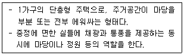
- 테라스 하우스
- 아파트
- 파티오 하우스
- 연립 주택
(정답률: 72%)
28. 래드번 계획의 특징으로 가장 거리가 먼 것은?
- 보도와 차도를 분리하여 계획하였다.
- 주택 내부의 공간 배치에 있어서 침실은 차량 접근 도로 쪽에 가깝게 배치하였다.
- 쿨데삭형의 가로망을 일정한 간격으로 배열하고 그 주변에 주택을 배치하였다.
- 주택 단지 어디로나 통할 수 있는 공동 오픈스페이스를 조성하였다.
(정답률: 77%)
29. 주택단지 계획 시 주택용지율을 70%, 총 인구밀도를 210인/ha로 한다면, 순 인구밀도는?
- 147 인/ha
- 210 인/ha
- 300 인/ha
- 333 인/ha
(정답률: 67%)
30. 주차장의 장애인전용 주차단위구획 규모 기준이 옳은 것은? (단, 아래 수치는 '너비×길이'이며, 평행주차형식 외의 경우다.)
- 2.0m ×3.6m 이상
- 2.3m ×5.0m 이상
- 2.5m ×5.1m 이상
- 3.3m ×5.0m 이상
(정답률: 69%)
31. 구릉지 주택의 획지계획에 있어 일조와 조망을 확보하기 위해 우선적으로 고려해야 할 사항은?
- 토질(Soil)
- 경사향(Aspect)
- 수문(Hydrology)
- 미기후(Micro-climate)
(정답률: 82%)
32. 지구단위계획에 대한 도시·군관리계획결정도의 표시기호인 ㉠과 ㉡의 명칭이 모두 옳은 것은?
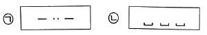
- ㉠ 획지경계선, ㉡ 건축지정선
- ㉠ 획지경계선, ㉡ 건축한계선
- ㉠ 지구단위계획구역, ㉡ 건축지정선
- ㉠ 지구단위계획구역, ㉡ 건축한계선
(정답률: 56%)
33. 지구단위계획 수립 시 각 용지별 토지이용, 계획 수립기준이 틀린 것은?
- 일조권을 감안하여 단독주택 용지가 아파트 용지의 진북방향으로 입지하는 때에는 충분한 이격 거리가 유지되도록 하여야 한다.
- 녹지용지는 쾌적한 주거환경을 조성하는데 필요한 근린공원·어린이공원·완충녹지·경관녹지·광장·보행자전용도로·친수공간 등으로 구획한다.
- 상업용지는 주거용지 면적의 5% 내외에서 계획하는 것을 원칙으로 하되, 당해 구역의 경제권 및 생활권의 규모와 구조 등을 감안하여 적정한 비율을 확보하도록 한다.
- 주거용지와 면하는 철도부지변에는 폭 30m 미만의 완충녹지, 폭 25m 이상의 도시·군계획 도로변에는 폭 10m 미만의 완충녹지를 설치하는 것이 바람직하다.
(정답률: 70%)
34. 도시·군계획시설로서 보행자전용도로의 최소 폭 기준으로 옳은 것은?
- 1.0m 이상
- 1.2m 이상
- 1.5m 이상
- 2.0m 이상
(정답률: 69%)
35. 주택단지 안의 도로에 관한 아래 내용에서 ( )에 들어갈 내용으로 옳은 것은? (단, 주택건설기준 등에 관한 규정에 따른다.)
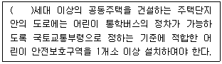
- 300
- 500
- 1500
- 3000
(정답률: 52%)
36. 구조물의 높이(H)와 그 외부 공간의 거리(D)의 관계에서 공간 폐쇄감을 거의 상실(공허감)하는 각도(D/H)는?
- 약 14°
- 약 27°
- 약 45°
- 약 60°
(정답률: 60%)
37. 공동구의 설치로 인한 장점이 아닌 것은?
- 도시미관 향상
- 방재효율 향상
- 설비 갱신 용이
- 초기 설치비 절감
(정답률: 80%)
38. 1991년 도시설계제도의 한계를 보완하기 위해 상세계획제도를 도입하게 된 근거 법령은?
- 건축법
- 도시계획법
- 국토이용관리법
- 국토의 계획 및 이용에 관한 법률
(정답률: 65%)
39. 수목의 식재기법 중 정형(定刑)식재 패턴에 해당하지 않는 것은?
- 교호식재
- 단식식재
- 일렬식재
- 부등변삼각식재
(정답률: 64%)
40. Litton이 산림경관을 분석하는데 사용한 시각회랑에 의한 방법에서, 경관의 변화요인(variable factors)에 해당하지 않는 것은?
- 시간(time)
- 계절(season)
- 거리(distance)
- 연속(sequence)
(정답률: 64%)
3과목: 도시개발론
41. 어느 개발 사업의 연차별 운영 수익이 아래와 같을 때, 이 사업의 순현재가치는 약 얼마인가? (단, 이자율은 10%, 억 단위 미만은 버린다.)
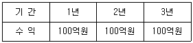
- 약 149억원
- 약 248억원
- 약 331억원
- 약 374억원
(정답률: 48%)
42. 빈집 및 소규모주택 정비에 관한 특례법상 소규모주택정비사업에 해당하지 않는 것은?
- 자율주택정비사업
- 가로주택정비사업
- 소규모재건축사업
- 밀집구역정비사업
(정답률: 57%)
43. 다음 중 주민참여형 도시개발의 유형과 가장 거리가 먼 것은?
- BTL방식
- 민간협약
- 주민투표
- 개발협정
(정답률: 63%)
44. 특수목적회사(SPC)에 대한 설명으로 틀린 것은?
- 채권 매각과 원리금 상환이 주요 업무이다.
- 유동화 업무가 끝난 후 개발회사로 발전한다.
- 파산 위험 분리 등의 목적으로 유동화 대상 자산을 양도받아 유동화 업무를 담당한다.
- 부실채권을 매수해 국내외의 투자자들에게 매각하는 중개기관 역할을 한다.
(정답률: 59%)
45. 나폴레옹 3세의 명령에 의해 오스만이 추진한 것으로, 근대적 도시재개발의 시작이라고 할 수 있는 것은?
- 런던 개조 계획
- 파리 개조 계획
- 콜럼비아 도시미 운동
- 말로법에 의한 주거환경개선사업
(정답률: 79%)
46. 개발형태에 의한 개발사업을 신개발사업과 재개발사업으로 분류할 때, 다음 중 신개발사업에 포함되지 않는 것은?
- 건축물 중개축사업
- 관광단지조성사업
- 도시개발사업
- SOC사업
(정답률: 71%)
47. 도시 및 주거환경정비법에 따른 관리처분계획의 수립 기준에 대한 설명으로 틀린 것은?
- 종전의 또는 건축물의 면적·이용 상황·환경, 그 밖의 사항을 종합적으로 고려하여 대지 또는 건축물이 균형있게 분양신청자에게 배분되고 합리적으로 이용되도록 한다.
- 너무 좁은 토지 또는 건축물이나 정비구역 지정 후 분할된 토지를 취득한 자에게는 현금으로 청산할 수 없다.
- 지나치게 좁거나 넓은 토지 또는 건축물은 넓히거나 좁혀 대지 또는 건축물이 적정 규모가 되도록 한다.
- 재해 또는 위생상의 위해를 방지하기 위하여 토지의 규모를 조정할 특별한 필요가 있는 때에는 너무 좁은 토지를 넓혀 토지를 갈음하여 보상을 하거나 건축물의 일부와 그 건축물이 있는 대지의 공유지분을 교부할 수 있다.
(정답률: 70%)
48. 도시개발사업의 사업성 평가지표인 수익성지수(profitability index)에 대한 설명이 옳은 것은?
- 프로젝트에서 발생하는 할인된 전체 수입에서 할인된 전체 비용을 뺀 값이다.
- 수익성 지수가 0보다 클 때 사업성이 있다고 평가한다.
- 수익성 지수는 경제성 평가 지표인 편익/비용비가 동일한 개념이다.
- 수입과 비용을 동일하게 만들어 주는 할인율을 사용한다.
(정답률: 43%)
49. 개발수요분석에 활용되는 예측 모형 중 정량적 모형에 해당하지 않는 것은?
- Huff모형
- 중력모형
- 시계열분석
- 델파이법
(정답률: 60%)
50. 이미 악화된 지역에 대하여 기존시설을 보존하면서 노후 및 불량화 요인만을 제거하는 부분적인 철거재개발 형식으로, 구역의 기능과 환경을 회복·개선하는 소극적 재개발방식은?
- 전면재개발(redevelopment)
- 수복재개발(rehabilitation)
- 보전재개발(conservation)
- 합동재개발(pathnership)
(정답률: 67%)
51. 문화재 보존이나 환경보호 등을 위해 해당 지역의 토지소유자로 하여금 재산상의 손실 부분만큼을 다른 지역에 대한 개발권으로 이전하여 주는 제도는?
- TOD
- TDR
- PUD
- Floating zonig
(정답률: 71%)
52. 도시개발을 위한 자금조달 수단 중 지분조달방식에 대한 설명으로 틀린 것은?
- 지분투자자가 항상 사업계획에 동의하는 것은 아니므로 이에 따른 문제의 발생도 고려하여야 한다.
- 지분투자로 자금을 조달하게 되면 투자금액을 상환하지 않아도 되므로 특히 현금이 긴요할 때 사용할 수 있는 주요 투자수단이 된다.
- 중소기업의 경우 신용이 취약한 기업은 차입수단, 규모, 시기, 비용 상의 문제점이 존재한다.
- 회사 통제권의 일부를 포기해야 한다.
(정답률: 45%)
53. 도시 및 주거환경정비법령상 재개발사업을 위한 정비계획 입안 대상 지역 기준이 틀린 것은? (단, 노후·불량 건축물의 수가 전체 건축물 수의 3분의 2 이상인 지역인 경우)
- 순환용주택을 건설하기 위하여 필요한 지역
- 철거민이 50세대 이상 교무로 정착한 지역이거나 인구가 과도하게 밀집되어 있고 기반시설의 정비가 불량하여 주거환경이 열악하고 그 개선이 시급한 지역
- 인구·산업 등이 과도하게 집중되어 있어 도시기능의 회복을 위하여 토지의 합리적인 이용이 요청되는 지역
- 건축물의 일부가 멸실되어 붕괴나 그 밖의 안전사고의 우려가 있는 지역
(정답률: 31%)
54. 수도권에 집중되어 있는 공공기관의 지방 이전을 계기로 이들 기관과 지역의 대학, 연구소, 지방자치단체가 협력하여 지역의 새로운 성장동력을 창출하는 것을 목표로 하는 것은?
- 혁신도시개발사업
- 기업도시개발사업
- 도시환경재정비사업
- 행정중심복합도시사업
(정답률: 67%)
55. 주택법상 정의에 따라 국민주택규모의 1호 도는 1세대당 주거전용면적 기준이 옳은 것은? (단, 수도권을 제외한 도시지역이 아닌 읍 또는 면 지역은 제외한다.)
- 65m2 이하
- 85m2 이하
- 100m2 이하
- 120m2 이하
(정답률: 64%)
56. 민관합동 부동산개발금융방식인 프로젝트 파이낸싱(PF)에 대한 설명으로 틀린 것은?
- 협의의 의미로 프로젝트 자체의 사업성과 그로부터의 현금흐름을 바탕으로 자금을 조달하는 것을 말한다.
- 기업금융과 대별되는 PF의 특징 중 하나인 비소구금용(non-recourse financing)이란 투자자의 부담을 투자액 범위 내로 한정하는 방식을 말한다.
- 기업금융과 대별되는 PF의 특징 중 하나인 부외금융(off-balance-sheet financing)이란 프로젝트회사의 부채가 손익계산서상에 나타나게 함으로써 프로젝트회사의 자본감소가 사업성에 영향이 없도록 하는 것을 의미한다.
- 광의의 의미로 특정 사업의 소요자금을 조달하기 위한 일체의 금융방식을 의미하며 개발 사업과 관련한 모든 금융방식을 프로젝트 파이낸싱이라 할 수 있다.
(정답률: 58%)
57. 기업의 자금조달 방법을 직접금융과 간접금융으로 분류할 때, 다음 중 직접금융에 관한 설명으로 옳은 것은?
- 정부의 각 부처에서 실시 중인 정책금융으로부터의 조달을 포함한다.
- 은행 등 일반금융으로부터의 조달, 불특정다수인으로부터의 사채발행을 통한 자금조달을 포함한다.
- 개별적인 금전소비대차계약에 의한 차입과 사채발행을 통한 자금조달로 분류할 수 있다.
- 일반투자자를 주주로 끌어들이는 방법을 통해 기업이 필요로 하는 자금을 조달한다.
(정답률: 41%)
58. 기업의 자금조달 구조로 크게 내부자금과 외부자금으로 구분할 때, 다음 중 내부자금의 형태에 해당하는 것은?
- 국제리스
- 상업차관
- 회사채 발행
- 감가상각충당금
(정답률: 56%)
59. 시장실패를 해결하기 위하여 정부가 개입하는 토지이용규제의 형태로 토지의 평면적 이용에 기능적 특성을 부여하여 토지 이용에 따르는 기능 간의 상층을 막는 제도는?
- 뉴어바니즘
- 지역지구제
- 스마트성장
- 획지분할제도
(정답률: 66%)
60. Calthorpe가 제시한 대중교통중심개발(TOD)의 원칙에 해당하지 않는 것은?
- 주택의 유형, 밀도의 혼합 배치
- 자동차 중심의 중·저밀 개발 유지
- 지구 내 목적지 간 보행 친화적 가로망 구축
- 역으로부터 보행거리 내에 주거, 상업, 직장, 공원, 공공시설 설치
(정답률: 75%)
4과목: 국토 및 지역계획
61. 다음 지역계획의 이론들을 그 발생 시기가 빠른 것부터 순서대로 올바르게 나열한 것은?
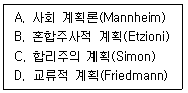
- A – B – C - D
- A – B – D - C
- A – C – D - B
- A – C – B – D
(정답률: 62%)
62. 전국 및 j지역의 고용인구가 아래와 같을 때, j지역 i산업의 입지계수(location quotient)는?
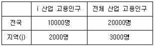
- 약 0.33
- 약 0.83
- 약 1.33
- 약 1.83
(정답률: 59%)
63. 한센(N. Hansen)의 동질지역 구분에 해당하지 않는 것은?
- 낙후지역(lagging regions)
- 침체지역(recession regions)
- 과밀지역(congested regions)
- 중간지역(intermediate regions)
(정답률: 40%)
64. 도종합계획에 대한 설명이 틀린 것은?
- 국토종합계획의 이념과 기분 목표에 기초를 둔다.
- 상위계획을 지역 특성에 맞게 수용한다.
- 해당 도의 관할 구역에서 수립되는 시·군종합계획과는 상호 관계가 없다.
- 경기도와 제주특별자치도는 도종합계획을 수립하지 아니할 수 있다.
(정답률: 68%)
65. 지프(Zipf)의 순위규모법칙 모형(Pr=P1/rq)에서 상수(q)에 대한 설명으로 가장 거리가 먼 것은?
- q = 1 인 경우 : 등위규모분포 상태로 도시체계가 전체적으로 균형 잡힌 상태다.
- q ＜ 1 인 경우 : 종주분포로서 상위 몇몇 도시에 인구가 과다하게 밀집한다.
- q가 0으로 접근하는 경우 : 도시 계층이 형성되지 못한 상태로 모든 도시들이 같은 규모를 가진다.
- q가 무한대로 수렴하는 경우 : 한 개 도시만 형성 즉, 도시국가를 의미한다.
(정답률: 54%)
66. 어느 지역의 총 고용인구는 500000명이고 비기반부문의 고용인구가 400000명일 때, 이 지역에 외부지역으로의 수출만을 목적으로 하는 기반활동이 새롭게 입지하여 5000명의 고용인구의 증가가 예상된다면, 이 지역의 총 고용인구는 얼마나 증가하는가?
- 10000명
- 15000명
- 20000명
- 25000명
(정답률: 50%)
67. 지역계획의 형성 배경으로 틀린 것은?
- 지역적 문제의 심각성을 인식하고 개선하고자 했던 계획적 노력과 이론적 발전이 있었기 때문이다.
- 산업화 및 도시화에 따른 지역의 기능적인 문제가 발생하였기 때문이다.
- 지역주의 또는 지방주의에 부응하는 지역계획에 대한 요구 때문이다.
- 고도의 경제 성장으로 인해 발생한 산업 간 성장 격차를 줄여 산업 간 균형 성장을 우선 도모할 필요가 있었기 때문이다.
(정답률: 38%)
68. 다음 중 제4차 국토종합계획이 제4차 국토종합계획 수정계획(2006-2020)으로 변경된 배경으로 가장 거리가 먼 것은?
- 지역 간, 계층 간 통합과 상생발전을 위한 방안 제시의 필요성
- 주요 대도시의 주택 부족문제를 해결하기 위한 주택의 대량 건설과 보급의 필요성
- 행정중심복합도시 등 국가 중추 기능의 지방분산에 따른 국토공간구조의 변화를 반영할 필요성
- 남·북한 교류협력을 더욱 심화시키고 장기적은 국토통일을 염두에 둔 한반도 차원의 국토구성 마련 필요성
(정답률: 59%)
69. 허쉬만이 주장한 적하(trickling down)효과에 대한 설명과 가장 거리가 먼 것은?
- 소득이 높은 중심 도시가 잉여 자본을 주변 지역에 투자하면 주변 지역은 빠르게 성장하게 된다.
- 중심 도시가 주변 지역에서 농산물을 구입하면 주변 지역은 수출의 증대로 성장하게 된다.
- 중심 도시는 주변 지역의 실업자를 흡수하게 되고 주변 지역의 근로자들은 중심도시에서 직업을 구하고 소득을 올릴 수 있게 된다.
- 중심 도시가 주변 지역의 경제력을 흡수하여 성장 발전을 하게 되어, 주변 지역의 발전은 둔화된다.
(정답률: 67%)
70. 도시규모 이론에 있어서 대도시론을 주장한 학자는?
- 언윈(R. Unwin)
- 코미(T. Comey)
- 하워드(E. Howard)
- 테일러(C.R. Taylor)
(정답률: 47%)
71. 제3차 수도권정비계획(2006~2020)의 주요 정비 목표에 해당하지 않는 것은?
- 동북아 경제중심지로서의 경쟁력 있는 수도권 형성
- 지속가능한 수도권 성장관리기반 구축
- 지방과 더불어 발전하는 수도권 구현
- 수도권 혁신성장 역량 제고
(정답률: 55%)
72. 원료지향적 산업과 비교하여 시장지향적인 산업의 특징에 해당하는 것은?
- 수요의 변동이 심하여 많은 재고량을 확보해 두어야 한다.
- 전반적인 수송비가 다른 비용보다 지역에 따라 폭넓게 변화한다.
- 제품의 제조과정에서 원료의 중량이 크게 감소하는 경향이 있다.
- 단위 당 원료의 수송비용이 단위 당 최종 생산물의 수송비용보다 크거나 같다.
(정답률: 54%)
73. P. Cooke(1992)가 제시한 지역혁신체제의 상부구조(super structure)에 해당하지 않는 것은?
- 지역법 규범
- 지역의 문화
- 지역의 조직과 제도
- 지역의 도로, 공항 및 통신망
(정답률: 45%)
74. 결절지역(nodal region)에 대한 설명이 틀린 것은?
- 이질적인 공간경제의 속성과 공간적 차원을 중요하게 다루는 개념이다.
- 기능적 측면에서 공간상의 흐름, 접촉, 상호의존성을 고려한 개념이다.
- 인구와 경제적 활동이 집적하게 되므로 중심지역과 주변지역으로 나뉘어진다.
- 지역경제 및 지역정책 목적으로 효과적으로 달성하기 위해 인위적으로 설정한 지역이다.
(정답률: 59%)
75. 고트만(J. Gottmann)은 미국 동북부 대서양 연안 지대에 나타나는 연담도시형의 대규모 대도시군을 무엇이라 하였는가?
- 메트로폴리스
- 메갈로폴리스
- 다이애나폴리스
- 에큐메네폴리스
(정답률: 66%)
76. 이론가와 산업입지이론의 연결이 틀린 것은?
- 튀넨 – 중심지 입지론
- 뢰쉬 – 최대수요 입지론
- 베버 – 최소비용 입지론
- 호텔링 – 상호의존적 입지론
(정답률: 49%)
77. 토다로(Michael Todaro)의 인구이동 모형에 대한 설명으로 가장 적합한 것은?
- 주로 선진국의 농촌과 도시 간의 인구이동 현상을 설명하는 모형이다.
- 도시에서 주변 농촌으로 역류하는 인구이동 현상을 설명하는 모형이다.
- 실질 소득보다 기대 소득의 개념으로 인구이동 현상을 설명하는 모형이다.
- 사회주의 국가의 농촌과 도시 간의 인구이동 현상을 설명하는 모형이다.
(정답률: 54%)
78. 국토 및 지역계획 수립 과정에서 사업의 경제적 타당성과 우선 순위를 결정하는 비용·편익 분석방법의 구체적인 측정 방법이 아닌 것은?
- 내부수익률(IRR)
- 순현재가치(NPV)
- 편익-비용비(B/C Ratio)
- 지역승수(regional multiplier)
(정답률: 74%)
79. 카스텔(Castells)이 사회구성이론을 통해 도시 구조의 발전 과정을 설명하고자, 경제 부문을 분류한 4가지 공간 유형이 아닌 것은?
- 여가공간(Leisure Space)
- 교환공간(Exchange Space)
- 생산공간(Production Space)
- 소비공간(Consumption Space)
(정답률: 40%)
80. 우리나라의 제1차 국토종합개발계획(1972~1982)에서 전국을 4대권과 9중권, 17소권으로 구분하였다. 이 때 4대권의 설정 기준으로 옳은 것은?
- 하천수계
- 군 단위 행정구역
- 경제권
- 도 단위 행정구역
(정답률: 55%)
5과목: 도시계획관계법규
81. 수도권정비계획법령상 자연보전권역에서 수도권정비위원회의 심의를 거쳐 허용될 수 있는 택지조성사업의 최대 면적 기준은? (단, 오염총량관리계획 시행지역이 아닌 지역에서 시행하는 택지조성사업인 경우)
- 3만m2 이하
- 6만m2 이하
- 10만m2 이하
- 100만m2 이하
(정답률: 33%)
82. 개발제한구역의 지정 및 관리에 관한 특별조치법령에 따른 취락지구의 지정기준 및 정비에 관한 설명 중 틀린 것은?
- 취락을 구성하는 주택의 수가 10호 이상이어야 한다.
- 취락지구 1만m2 당 주택의 수가 원치적으로 30호 이상이어야 한다.
- 취락지구의 경제 설정 시, 지목이 대인 경우에는 가능한 한 필지가 분할되지 아니하도록 한다.
- 취락지구정비사업을 시행할 때에는 국토의 계획 및 이용에 관한 법률에 따라 취락지구를 지구단위계획구역으로 지정한다.
(정답률: 44%)
83. 도시개발법령상 도시개발구역의 전부를 환지방식으로 시행하는 도시개발사업의 경우, 지정권자가 시행자로 지정하여야 하는 자는?
- 국토교통부장관
- 행정안전부장관
- 「지방공기업법」에 따라 설립된 지방공사
- 도시개발구역의 토지 소유자가 도시개발을 위하여 설립한 조합
(정답률: 59%)
84. 주택법령에 따른 간선시설의 종류별 설치범위 기준이 틀린 것은?
- 도로 : 주택단지 밖의 기간이 되는 도로부터 주택단지의 경계선까지로 하되, 그 길이가 150m를 초과하는 경우로서 그 초과부분에 한한다.
- 상하수도시설 : 주택단지 밖의 기간이 되는 상·하수도시설부터 주택단지의 경계선까지의 시설로 하되, 그 길이가 200m를 초과하는 경우로서 그 초과부분에 한한다.
- 지역난방시설 : 주택단지 밖의 기간이 되는 열수송관의 분기점부터 주택단지 안의 각 기계실입구 차단밸브까지로 한다.
- 통신시설 : 관로시설은 주택단지 밖의 기간이 되는 시설부터 주택단지 경계선까지, 케이블 시설은 주택단지 밖의 기간이 되는 시설부터 주택단지 안의 최초 단자까지로 한다.
(정답률: 51%)
85. 노상주차장의 원칙적인 설치권자가 아닌 자는?
- 경찰서장
- 특별시장
- 군수
- 구청장
(정답률: 71%)
86. 지구단위계획에 관한 아래 설명 중 밑줄 친 부분에 해당하는 내용으로만 옳게 나열된 것은?
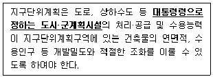
- 주차장, 공원, 공공공지
- 방송통신시설, 유수지, 시장
- 공공청사, 대학교, 열공급설비
- 고등학교, 공공직업훈련시설, 체육시설
(정답률: 64%)
87. 국토기본법령상 국토정책위원회에 관한 설명으로 옳은 것은?
- 위원장은 국토교통부장관이 된다.
- 위원장 1명, 부위원장 2명을 포함한 42명 이내의 위원으로 구성한다.
- 위촉위원의 임기는 3년으로 한다.
- 위원 중 위촉위원은 대통령령으로 정하는 중앙해정기관의 장과 국무조정실장으로 한다.
(정답률: 55%)
88. 시장·군수·구청장이 시·도지사의 승인을 받지 않아도 되는 경미한 조성계획의 변경 기준이 틀린 것은?
- 관광시설계획면적이 100분의 20 이내의 변경
- 관광시설계획 중 시설지구별 건축 연면적의 100분의 30 이내의 변경
- 관광시설계획 중 시설지구별 토지이용계획 면적의 100분의 40 이내의 변경
- 관광시설계획 중 시설지구에 설치하는 시설의 명칭 변경
(정답률: 58%)
89. 국토에 관한 계획 및 정책의 수립·시행에 관한 기본적인 사항을 정함으로써 국토의 건전한 발전과 국민의 복리향상에 이바지함을 목적으로 제정·시행되는 것은?
- 국토기본법
- 도시개발법
- 택지개발촉진법
- 국토의 계획 및 이용에 관한 법률
(정답률: 47%)
90. 아래에서 ( )에 들어갈 내용으로 옳은 것은?
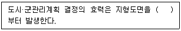
- 고시한 날
- 작성한 날
- 고시한 날 1개월 후
- 고시한 날 3개월 후
(정답률: 74%)
91. 건축법령에서 규정하고 있지 않는 것은?
- 지역 및 지구의 지정에 관한 규정
- 건축물의 유지와 관리에 관한 규정
- 건축물의 대지 및 도로에 관한 규정
- 건축물의 구조 및 재료 등에 관한 규정
(정답률: 57%)
92. 도시 및 주거환경정비법에 의한 정비계획의 개발 규모가 5만m2 이상인 경우 도시공원 또는 녹지의 확보 기준으로 옳은 것은? (단, 도시공원 및 녹지 등에 관한 법령에 따른다.)
- 상주인구 1인당 3m2 이상 또는 개발 부지 면적의 5% 이상 중 큰 면적
- 상주인구 1인당 6m2 이상 또는 개발 부지 면적의 9% 이상 중 큰 면적
- 1세대당 3m2 이상 또는 개발 부지 면적의 5% 이상 중 큰 면적
- 1세대당 2m2 이상 또는 개발 부지 면적의 5% 이상 중 큰 면적
(정답률: 28%)
93. 한국토지주택공사가 대통령령으로 정하는 호수 이상의 주택건설사업을 시행하는 경우, 사업계획승인을 받고자 사업계획승인권자에게 제출하여야 할 서류가 아닌 것은? (단, 표본설계도서에 따라 신청하는 경우)
- 신청서
- 사업계획서
- 공사설계도서
- 주택과 그 부대시설 및 복리시설의 배치도
(정답률: 45%)
94. 도시 및 주거환경정비법령의 정의에 따라 정비기반시설은 양호하나 노후·불량건축물에 해당하는 공동주택이 밀집한 지역에서 주거환경을 개선하기 위해 시행하는 사업은?
- 주거환경개선사업
- 재개발사업
- 재건축사업
- 도시환경정비사업
(정답률: 53%)
95. 도시공원 및 녹지 등에 관한 법령상 도시공원을 관리하는 '공원관리청'에 해당하는 자는?
- 국립공원공단 이사장
- 국토교통부장관
- 시장 또는 군수
- 구청장
(정답률: 64%)
96. 수도권정비계획법령상 관계 행정기관의 장이 성장관리권역에서의 시설의 신설·증설에 대한 허가를 하여서는 아니되는 경우는?
- 수도권에서의 학교 이전
- 수도권정비위원회의 심의를 거친 소규모대학의 신설
- 수도권에서 이전하는 연수 시설로, 종전 규모의 2배 신축
- 기존 연수 시설의 건축물 연면적의 100분의 20 범위에서의 증축
(정답률: 64%)
97. 주차장법령상 주차장 외의 용도로 사용되는 부분이 판매시설인 주차전용건축물의 경우, 건축물의 연면적 중 주차장으로 사용되는 부분의 비율이 최소 얼마 이상이어야 하는가?
- 70% 이상
- 80% 이상
- 90% 이상
- 95% 이상
(정답률: 38%)
98. 도시개발사업의 전부 또는 일부를 환지 방식으로 시행하기 위하여 시행자가 작성하여야 하는 환지계획의 내용에 해당하지 않는 것은?
- 환지설계
- 환지예정지 지정 명세
- 필지별로 된 환지 명세
- 축척 1200분의 1 이상의 환지예정지도
(정답률: 47%)
99. 도시재정비 촉진을 위한 특별법령에 따른 재정비촉진사업에 해당하지 않는 것은?
- 도시개발법에 따른 도시개발사업
- 택지개발촉진법에 따른 택지개발사업
- 전통시장 및 상점가 육성을 위한 특별법에 따른 시장정비사업
- 빈집 및 소규모주택 정비에 관한 특례법에 따른 가로주택정비사업
(정답률: 47%)
100. 다음 중 건축법령상 공동주택에 해당하지 않는 것은?
- 연립주택
- 다가구주택
- 다세대주택
- 기숙사
(정답률: 68%)